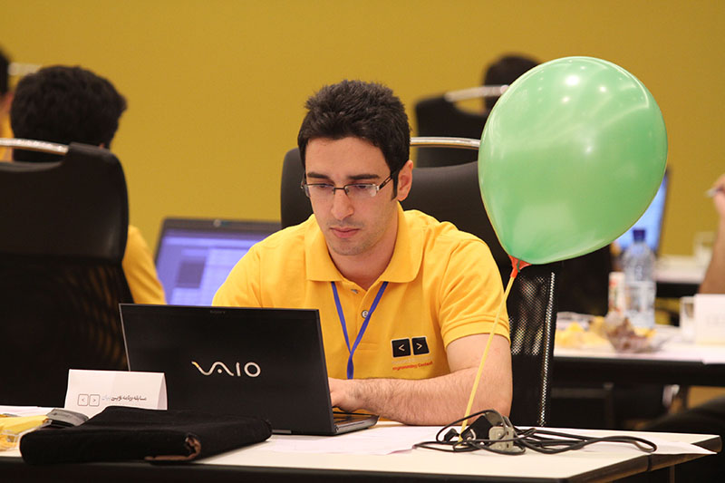
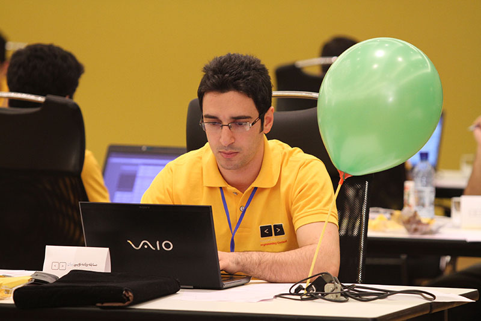

دانشگاه بجنورد به زودی میزبان یک رویداد برنامهنویسی هیجانانگیز خواهد بود که هدف آن ارتقاء مهارتهای برنامهنویسی و ایجاد فضای تعامل بین دانشجویان و متخصصان این حوزه است. این رویداد شامل کارگاههای آموزشی، مسابقات کدنویسی و سخنرانیهای انگیزشی از اساتید و کارآفرینان موفق خواهد بود. شرکتکنندگان فرصتی برای یادگیری تکنیکهای نوین برنامهنویسی و شبکهسازی با دیگر علاقهمندان خواهند داشت. این رویداد به عنوان یک پلتفرم مناسب برای معرفی استعدادهای جدید و تقویت روحیه همکاری در بین دانشجویان طراحی شده است.
تعداد شرکت کنندگان تا این لحظه :

مسابقه برنامهنویسی دانشگاه بجنورد با هدف تشویق و ارتقاء مهارتهای برنامهنویسی دانشجویان برگزار میشود. شرکتکنندگان باید در تیمهای حداکثر سه نفره ثبتنام کنند و در طول مسابقه، به حل مسائل مختلف برنامهنویسی در مدت زمان معین بپردازند. استفاده از هر گونه منابع خارجی، شامل کتابها و اینترنت، ممنوع است و تنها ابزار مجاز برای حل مسائل، کامپیوترهای ارائه شده توسط برگزارکنندگان میباشد. تیمها باید قبل از شروع مسابقه، قوانین و مقررات را به دقت مطالعه کرده و به آنها پایبند باشند. برندگان بر اساس سرعت و دقت در حل مسائل انتخاب خواهند شد و جوایزی برای تیمهای برتر در نظر گرفته شده است.

در مسابقه برنامهنویسی دانشگاه بجنورد، جوایز ارزندهای برای تیمهای برتر در نظر گرفته شده است. این جوایز شامل مدالهای طلا، نقره و برنز برای سه تیم اول، همچنین گواهینامههای معتبر و فرصتهای کارآموزی در شرکتهای فناوری معتبر میباشد. علاوه بر این، تیمهای برتر به نمایش پروژههای خود در رویدادهای ملی و بینالمللی دعوت خواهند شد تا استعدادهای خود را در سطح گستردهتری به نمایش بگذارند. این جوایز نه تنها انگیزهای برای شرکتکنندگان ایجاد میکند، بلکه فرصتی برای پیشرفت شغلی و توسعه مهارتهای فنی آنان فراهم میآورد.
.svg)
برای شرکت در مسابقه برنامهنویسی دانشگاه بجنورد، ابتدا باید تیم خود را تشکیل دهید و ثبتنام کنید. پس از ثبتنام، شرکتکنندگان باید به مطالعه و تمرین مسائل الگوریتمی بپردازند تا آمادگی لازم را کسب کنند. در روز مسابقه، تیمها به مدت مشخصی به حل مسائل مختلف پرداخته و در نهایت نتایج آنها ارزیابی میشود. پس از پایان مسابقه، تیمهای برتر معرفی شده و جوایز ارزندهای به آنها اهدا میشود. این رویداد فرصتی مناسب برای ارتقاء مهارتهای برنامهنویسی و تعامل با دیگر علاقهمندان به فناوری است.

 



Happy Developer یک برنامهنویس جوان و پرشور است که از دوران کودکی به دنیای فناوری علاقهمند بوده است. او با یادگیری زبانهای برنامهنویسی مختلف، از جمله Python و JavaScript، توانسته است پروژههای خلاقانهای را به انجام برساند. Happy Developer نه تنها به کدنویسی علاقه دارد، بلکه به اشتراکگذاری دانش خود با دیگران نیز اهمیت میدهد و در کارگاهها و سمینارهای مختلف شرکت میکند. او به دنبال خلق نرمافزارهایی است که زندگی روزمره را آسانتر کنند و همیشه در تلاش است تا با یادگیری مداوم، مهارتهای خود را بهبود بخشد. شخصیت شاداب و مثبت او باعث میشود که همکارانش از کار کردن با او لذت ببرند و او را به عنوان یک منبع الهام در جامعه برنامهنویسان بشناسند.

Creative Designer یک طراح خلاق و نوآور است که از دوران کودکی به هنر و طراحی علاقهمند بوده است. او با تحصیل در رشته طراحی گرافیک و تجربه کار در پروژههای مختلف، توانسته است سبک منحصر به فردی را برای خود ایجاد کند. Creative Designer به دنبال ترکیب هنر و فناوری است و با استفاده از نرمافزارهای پیشرفته، آثار بصری جذاب و تاثیرگذاری خلق میکند. او نه تنها به طراحی گرافیک، بلکه به طراحی تجربه کاربری (UX) و طراحی محصول نیز علاقهمند است و همواره در تلاش است تا با الهام از طبیعت و فرهنگهای مختلف، ایدههای نوآورانهای را به واقعیت تبدیل کند. شخصیت پرانرژی و مثبت او باعث میشود که همکارانش از همکاری با او لذت ببرند و او را به عنوان یک منبع الهام در دنیای طراحی بشناسند.